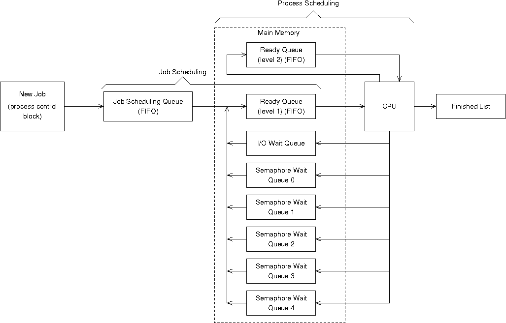

Project #2
Assigned: February 19Due: March 24, 3:00pm
Problem
(100 points) Design and implement a program (in any language) that simulates some of the job scheduling, CPU scheduling, and semaphore processing of an operating system.Detailed Description and Requirements
When jobs initially arrive in the system, they are put on the job scheduling queue which is maintained in FIFO order. The job scheduling algorithm is run when a job arrives or terminates. Job scheduling allows as many jobs to enter the ready state as possible given the following restriction: a job cannot enter the ready state if there is not enough free memory to accommodate that job's memory requirement. Do not start a job unless it is the first job on the job scheduling queue. When a job terminates, its memory is released, which may allow one or more waiting jobs to enter the ready state.
A job can only run if it requires less than or equal to the system's main memory capacity. The system has a total of 512 blocks of usable memory. If a new job arrives needing more than 512 blocks, it is rejected by the system with an appropriate error message. Rejected jobs do not factor into the final statistics (described below).
Note that all jobs in the ready state must fit into available main memory.
Process scheduling is managed as a multilevel feedback queue. The queue has two levels, each queue is organized as a FIFO, and both use a round robin scheduling technique. New jobs are put on the first level when arriving in the ready state. When a job from the first level is given access to the CPU, it is allowed a quantum of 100 time units. If it exceeds that time quantum, it is preempted and moves to the second level.
The jobs on the second level may only be allocated the CPU if there are no jobs on the first level. When a job on the second level is given access to the CPU, it is allowed a quantum of 300 time units. If it exceeds that, it is preempted and put back on the second level of the ready queue.
Process scheduling decisions are made whenever any process leaves the CPU for any reason (e.g., expiration of a quantum or job termination). When a job terminates, do job scheduling first, then process scheduling. Also, give preference to first level jobs (i.e., if a job from the second level of the ready queue is running, and a new job enters the first level, the running job is preempted to the second level in favor of the first level job).
While executing on the CPU, a job may require I/O, which preempts it to the I/O wait queue for the duration of its I/O burst.
While executing on the CPU, a job may perform a semaphore operation. Assume there are five semaphores shared among all jobs running in the system, numbered 0 through 4, each initialized to 1. If a job must wait because of a semaphore, it goes onto the appropriate wait queue until it is signaled. There is a separate wait queue for each semaphore.
When a job completes, put it on a finished list for later processing.
The simulator is driven by the events read from standard input. Examples of possible events are given below. The first field will be the first character of the line, and subsequent fields will be separated by one of more spaces or tabs. The header of each field in the following examples does not appear in the input stream.
A new job arrives:
Event Time Job Memory Run Time A 140 12 24 2720
Interpretation: job 12 arrives at time 140, requires 24 blocks of memory and uses the CPU for a total of 2720 time units.
A job needs to perform I/O:
Event Time I/O Burst Time I 214 85
Interpretation: the job currently running on the CPU will not finish its quantum because at time 214 it needs to perform I/O for a duration of 85 time units.
A job performs a wait on a semaphore:
Event Time Semaphore W 550 2
Interpretation: the job currently running on the CPU performs a wait on semaphore number 2 which may or may not cause it to be preempted. Initialize each semaphore to 1.
A job performs a signal on a semaphore:
Event Time Semaphore S 622 2
Interpretation: the job currently running on the CPU performs a performs a signal on semaphore number 2 which may allow a job to re-enter the ready state.
Display the status of the simulator:
Event Time D 214
Interpretation: display the status of the simulator at time 214.
You may assume that events appear on the input stream in ascending time order and no two events happen at the same time. However, realize that the events given in the input stream are not only events which your simulator must handle. For instance, a time quantum expiration is not an event given in the input stream, but it is an event which your simulator must handle. Furthermore, an internal event, such as a time quantum expiration, not in the input stream, may occur at the same time as an event in the input stream (e.g., a new job arrival). Events in the input stream are external events.
The following is a list of internal events (i.e., not given on the input stream) which your simulator must handle:
- I/O completion (C)
- time quantum expiration (E)
- job termination (T)
Assume that context switching, semaphore operations, and displays take no simulator time (an unrealistic assumption in a real operating system).
When a display is requested, print the contents of all queues as well as the job currently running on the CPU to standard output using only the format used in the sample output given below.
After processing all jobs, write the following to standard output (in this order, as shown on the sample output given below):
- completion time for each job (in order of completion),
- average turnaround time (where turnaround time is defined as completion time minus arrival time), and
- average job scheduling wait time (where wait time is defined as the number of time units spent in the job scheduling queue).
Event Collisons
Often more than one event happen at the same time. Use the following rules to determine which events to process first:
- If an internal event (e.g., an event not on the input stream such as time slice expiration, I/O completion, or job termination) and an external event (i.e., an event given explicitly on the input stream) happen at the same time, process the internal event first.
- If a job is scheduled to come off the I/O wait queue at the same time a job is scheduled to come off the semaphore wait queue, take the job off the I/O wait queue first.
Graphical View of the Simulator
Additional Requirements
Hints and notes
- You are advised to define a PCB (process control block) structure and use it as a node in the various queues of your simulator.
- When debugging your simulator, you are advised to add extra display events to the sample input to trace the movement of jobs throughout the various queues of the system.
- You are advised to organize jobs on the I/O wait queue in the order in which they are scheduled to come off (i.e., make the I/O queue a priority queue) to obviate having to search the queue for the next job to come off of it everytime an I/O operation completes.
- You are advised to organize jobs on each of the 5 semaphore wait queues in FIFO order.
- Since this program involves so many queues (I count 10), you are advised to use a programming language which has list operations built into the language, such as Python, or one which provides a queue data structure in a standard library, such as Java or C++. You are advised against re-inventing the wheel. You are also advised against using this project as an opportunity to learn a new language. Use tools with which you are already familiar and focus on the operating systems aspects of the project.
- If designed properly, the program required to solve this project should occupy no more than 1,000 lines of code (or less if you use built-in data structures or data structures from libraries).
Test data: sample input and output streams
- (only events A & D, & E & T) p2stdin_a and p2stdout_a [image]
- (only events A, I, & D, & E, C, & T) p2stdin_b and p2stdout_b [image]
- (all events: A, I, W, S, & D, & E, C, & T) p2stdin_c and p2stdout_c [image]
{kind=link}
{kind=link}
{kind=link}
This test data is available at /home/perugini_cps346/share/projects/p2/. At first, simply try to get only one job through your system. Once you are confident that your system processes only one job properly, try to get two jobs through the system.
While developing your simulator, you are encouraged to get it to work on the simple test input first (p2d.dat) and progressively enhance and refine your system to the point where it works on the most complex test input (p2a.dat).Use the UNIX diff utility to compare your output to the correct output. For full credit, the output produced by your program must have zero differences, as defined by diff, with the output posted here.
There is also a reference executable of a solution for this project available at /home/perugini_cps346/share/projects/p2/OSsim.
How to submit
Note: All directory and filenames below are case-sensitive. You must use the directory and filenames exactly as shown below, (i.e., all lower case).
Prepare your submission file as /home/<logname>/projects/p2/p2.tar. This archive must contain only the most minimal set of files necessary to build your simulator from scratch. Only the file /home/<logname>/projects/p2/p2.tar will be electronically collected from your account on the deadline.
Failure to follow these submission requirements will result in a 10% penalty.
Evaluation
Ninety percent of your score will come from correctness and 10% of your score will come from following our programming style guide. Applicable submission penalties will then be applied.
In an effort to award partial credit to students who are unable to complete certains parts of this project, students earn up to four different portions of the 90 possible points for correctness:- If your program produces this p2stdout_c exactly when run on p2stdin_c (all events: A, I, W, S, & D, & T, E, & C), you can earn up to 90 points.
- If your program produces this p2stdout_b exactly when run on p2stdin_b (only events A, I, & D, & T, E, & C), you can only earn up to 65 points.
- If your program produces this p2stdout_a exactly when run on p2stdin_a (only events A & D, & T & E), you can only earn up to 40 points.
- If your program does not produce this p2stdout_a exactly when run on p2stdin_a, you will not earn any points.
- If your program does not compile or execute without errors or warnings, you will not earn any points.
Note: Depending on how you order the jobs on your I/O wait queue, your dump of the jobs waiting for I/O may not match our output exactly, and for just that queue, that is acceptable. For instance, you might organize your I/O wait queue as a priority queue where the job which comes off first is at the head, or you might maintain jobs on the I/O wait queue in the order in which they are put on and then search for the job to take off when the I/O is complete.